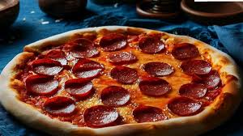

Odin Recipes

Para llevar a cabo la siguiente receta de pizza casera, necesitaras los siguientes ingredientes:
Ingredientes pizza
- Harina
- Queso
- Aceitunas
- Salame
- Salsa de tomate
- Tomate
- Oregano
Preparación
- Hacer la masa
- Echarle salsa de tomate sobre la masa
- Añadir queso cubriendo la pizza completamente por el lado de la salsa
- Añadir salame, oregano, aceitunas y tomate a gusto
- Colocar la pizza sobre una bandeja y dejar en el horno a 200° Celcius por 10 minutos
Receta de pizza